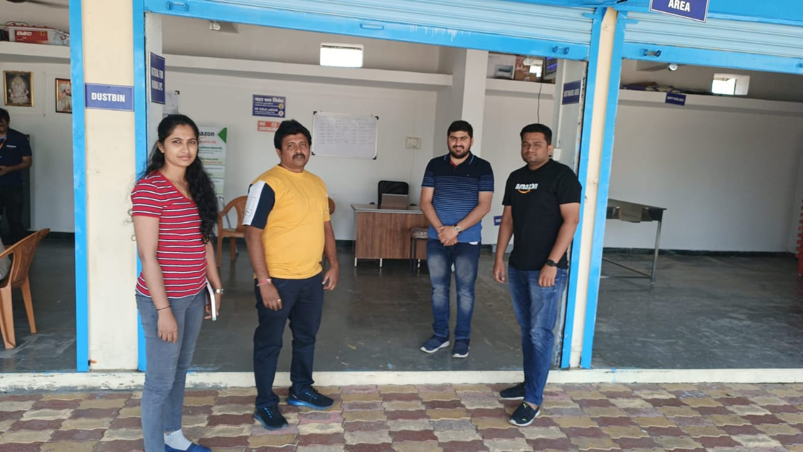
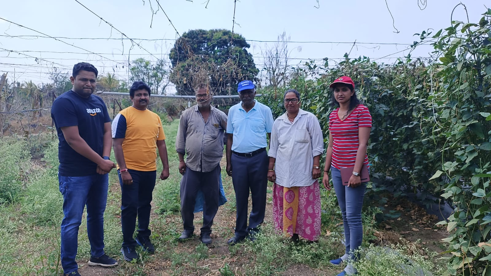

 Gramina Unnati has been associated with Big Basket , a Tata venture to assist in getting organic certifications for farmer groups in consortium with Reliable Organic Certification Agency in Bangalore.
We are associated with Amazon for organic product segment development including establishing a back-end supply chain with farmers's groups in thenstate of Maharashtra State for meeting the compliance requirement.
We have been undertaking Training programs for members of FPO based in Chikkaballapur for venturing into organic farming.
Associated with the Organic supply chain and retailing company o of Biju to secure the
supply of organic produces from a group of farmers.
Assisting well-known organic FPO of Nelamangala to establish production and grading
protocol at the farmer level to help them to improve the quality and compliance. Also helped them to onboard for certifications.Recently the company has linked a Bangalore-based Fish retailing company with FPOs based in Mandya for the supply of fish.
Hand hold formation of “Bangalore Store” in London to cater to EU and UK market for FPOs of Karnataka.